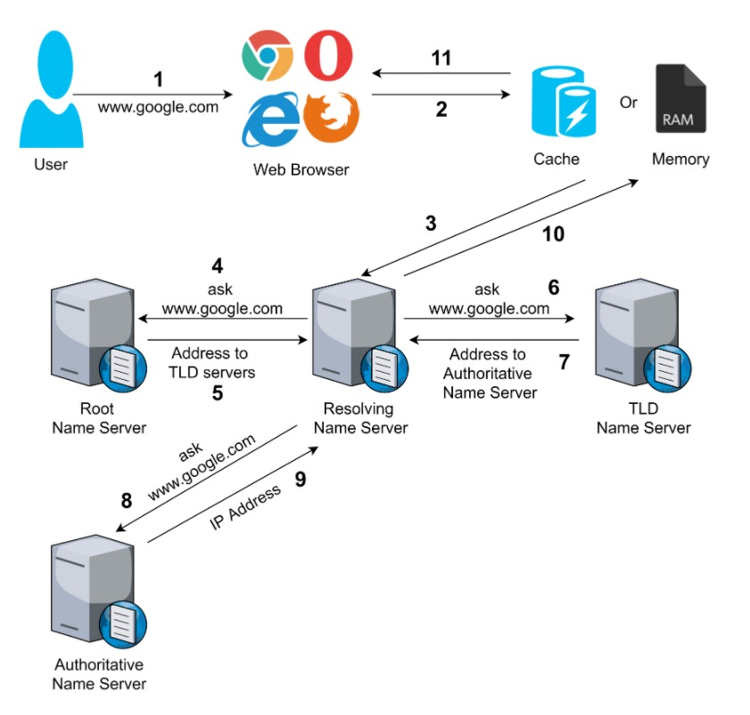

What is HTTP and HTTPS protocols?
HTTP stands for Hypertext Transfer Protocol. HTTP offers set of rules and standards which govern how any information can be transmitted on the World Wide Web. HTTP provides standard rules for web browsers & servers to communicate.
HTTP is an application layer network protocol which is built on top of TCP. HTTP uses Hypertext structured text which establishes the logical link between nodes containing text. It is also known as "stateless protocol" as each command is executed separately, without using reference of previous run command.
HTTP is a protocol which allows the fetching of resources, such as HTML documents. It is the foundation of any data exchange on the Web and it is a client-server protocol, which means requests are initiated by the recipient, usually the Web browser. A complete document is reconstructed from the different sub-documents fetched, for instance text, layout description, images, videos, scripts, and more.

Clients and servers communicate by exchanging individual messages (as opposed to a stream of data). The messages sent by the client, usually a Web browser, are called requests and the messages sent by the server as an answer are called responses.
Domain names were invented to solve this problem by using alphabets and allowing users to select easy to remember names for their websites. DNS or Domain Name System basically translates those domain names into IP addresses and points your device in the right direction. A domain name and its matching IP address is called a “DNS record”.
Here is a simple way to understand how DNS works in four steps. Suppose you want to visit www.google.com.
1. You open your browser and type www.google.com in the address bar and hit Enter on the keyboard. Immediately there is a quick check to see if you have visited this website previously. If the DNS records are found in your computer’s DNS cache, then the rest of the DNS lookup is skipped and you will be taken directly to www.google.com.
2. If no DNS records are found, then a query is sent to your local DNS server. Typically this is your Internet provider’s server and is often called a “resolving nameserver”.
3. If the records are not cached on the resolving nameserver, then the request is forwarded to what’s called a “root nameserver” to locate the DNS records. Root nameservers are designated servers around the world that are responsible for storing DNS data and keeping the system working smoothly. Once the DNS record is found on the root nameserver, it’s cached by your computer.
4. Now that the DNS records are located, a connection to the server where the website is stored will be opened and www.google.com will be displayed on your screen.
